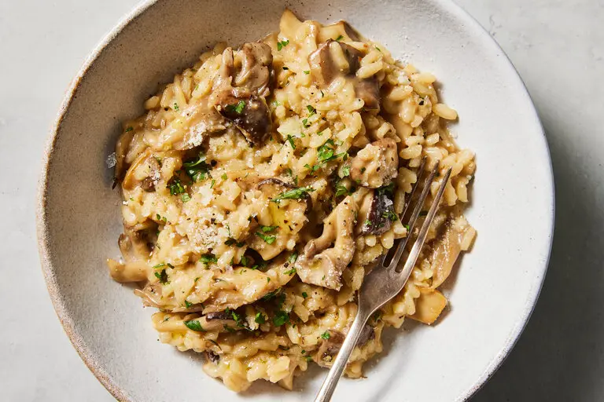

Home
Risotto

Description
A creamy dish of rice flavored with mushrooms. A good compliment to mains such as roast beef, chicken, pork, or beef.
Ingredients
- Broth
- Olive Oil
- Mustrooms
- Shallots
- Rice
- Wine
- Butter
- Parmesan cheese
- Chives
Steps
- Gather the ingredients
- Cook mushrooms until soft
- Add rice, cook and stir until coated with oil
- Add broth 1/2 cup at a time until rice is tender yet firm to the bite
- Remove from heat and stir in mushrooms, butter, chives, and cheese
- Season with salt and pepper and serve